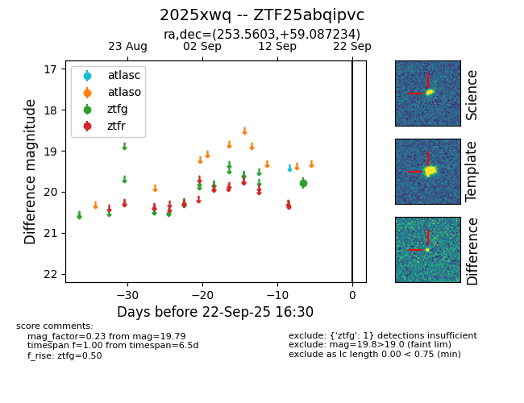

FINK: ZTF25abqipvc
Lasair: ZTF25abqipvc
ALeRCE: ZTF25abqipvc
TNS: 2025xwq
YSE: 2025xwq
ZTF25abqipvc (ztf,fink)
2025xwq (tns,yse)
equatorial (ra, dec) = (253.5603,+59.08723)
galactic (l, b) = (88.3111,+37.94896)

last ztfg=19.79
1 ztfg detections